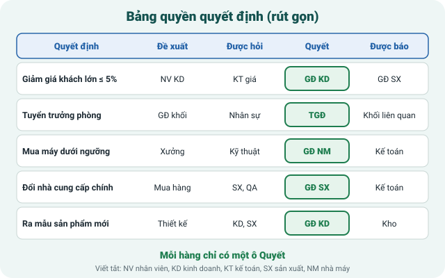

K8 · Làm việc nhóm và tôn trọng khác biệt › Bậc 5 Dẫn dắt
Thiết kế quyền quyết định giữa các khối
Bài này làm Tờ 5: Bảng quyền quyết định. Mẫu in. Bài dùng lại 4 mức tự quyết ở Giao việc và phản hồi (N5), áp dụng cho cả khối thay vì một người.
1. Mục tiêu
- Lập Bảng quyền quyết định cho 5 quyết định hay gặp, mỗi quyết định có đúng một người quyết.
- Chỉ ra 2 điểm nghẽn do cơ cấu gây ra, dựa trên 3 dấu hiệu.
2. Khởi động truy xuất
- Năm phần của Bản định hướng một trang là gì?
- Vì sao quản lý cấp trung cần biết trước nhân viên?
Đáp án
- Vì sao bây giờ; đi đâu; không làm gì; thay đổi cho từng nhóm; điều chưa biết.
- Để trả lời được câu hỏi của đội, và nói lại đúng thông điệp.
Xem lại: Truyền đạt qua nhiều cấp.
3. Giải thích
Ở tổ chức lớn, nhiều việc chậm không vì người kém. Việc chậm vì không rõ ai được quyết. Hồ sơ đi vòng qua nhiều khối, rồi dồn lên tổng giám đốc.
Bốn vai trong một quyết định.
- Đề xuất: người chuẩn bị phương án, có số liệu.
- Được hỏi ý kiến: người có chuyên môn hoặc bị ảnh hưởng. Ý kiến của họ phải được nghe trước khi quyết.
- Quyết: người chốt và chịu trách nhiệm. Chỉ một người.
- Được báo: người cần biết kết quả để làm việc của mình.
Cách chia vai này giống các bảng phân vai phổ biến như RACI. Tên gọi không quan trọng. Điều quan trọng là mỗi quyết định chỉ có một người quyết.

Ngưỡng. Cùng một loại quyết định, người quyết có thể khác theo mức tiền hoặc rủi ro. Ví dụ: mua máy dưới một mức nào đó thì giám đốc nhà máy quyết, trên mức đó thì tổng giám đốc quyết. Mức cụ thể do tổ chức tự đặt, theo điều lệ và quy chế nội bộ.
Ba dấu hiệu điểm nghẽn.
Dấu hiệu cơ cấu đang gây nghẽn
- Chờ lâuQuyết định quen thuộc mà phải chờ nhiều ngày.
- Nhiều người cùng quyếtHai khối đều nghĩ mình có quyền chốt, hoặc đều chờ bên kia.
- Hay dồn lên trênViệc thường ngày cứ bị đẩy lên ban điều hành.
Thấy dấu hiệu, đừng chỉ nhắc người làm nhanh hơn. Hãy sửa bảng quyền: chuyển quyền xuống gần thông tin hơn, hoặc chỉ định lại một người quyết.
4. Ví dụ tại nơi làm việc Việt Nam
Tình huống giả định. Một công ty sản xuất đồ gỗ xuất khẩu ở Bình Định có hai khối: kinh doanh và sản xuất.
Khách lớn xin giảm giá 5%. Kinh doanh nói mình quyết giá. Sản xuất nói giá ảnh hưởng chi phí nên phải hỏi mình. Hồ sơ đi lại hai tuần, rồi lên tổng giám đốc. Khách đã đặt hàng nơi khác.
Tổng giám đốc, anh Phong, họp hai giám đốc khối. Họ lập Tờ 5 cho 5 quyết định hay gặp.
Với giảm giá khách lớn: đề xuất: trưởng nhóm kinh doanh. Được hỏi: kế toán giá thành, trong 1 ngày. Quyết: giám đốc kinh doanh, nếu giảm đến 5%. Trên 5% thì tổng giám đốc quyết. Được báo: giám đốc sản xuất.
Ba tháng sau, thời gian trả lời khách về giá giảm từ khoảng 2 tuần xuống còn 2–3 ngày.
Vì sao cách này tốt: sản xuất vẫn được hỏi ý kiến, nhưng không giữ quyền chốt. Có ngưỡng rõ. Tổng giám đốc chỉ nhận việc vượt ngưỡng.
5. Thực hành
Tình huống giả định. Bạn là giám đốc điều hành một chuỗi khách sạn 3 sao ở miền Trung. Việc đổi nhà cung cấp đồ vải đang do 3 phòng cùng góp ý, không ai chốt.
Lập một hàng của Tờ 5 cho quyết định này. Ghi 1 dấu hiệu điểm nghẽn bạn thấy.
Gợi ý 1
Ai có thông tin về chất lượng đồ vải hằng ngày? Ai có thông tin về giá?
Gợi ý 2
Người được hỏi ý kiến cần một hạn trả lời. Nếu không, việc hỏi ý kiến thành việc chờ.
Lời giải mẫu
- Đề xuất: trưởng bộ phận buồng phòng, vì dùng đồ vải hằng ngày.
- Được hỏi ý kiến: phòng mua hàng về giá và hợp đồng; kế toán về ngân sách. Trả lời trong 3 ngày.
- Quyết: giám đốc vận hành chuỗi.
- Được báo: giám đốc từng khách sạn.
- Dấu hiệu: nhiều người cùng quyết. Ba phòng đều góp ý nhưng không ai chốt.
(Thông tin là giả định.)
6. Tự kiểm tra
Chọn đáp án. Mỗi lựa chọn đều có giải thích.
Câu 1. Bảng quyền ghi: giám đốc tài chính và giám đốc kinh doanh cùng quyết hạn mức công nợ cho khách. Vấn đề là gì?
-
Chưa đúng. Hai người cùng quyết thì dễ chờ nhau, hoặc không ai chịu trách nhiệm khi sai.
-
Đúng. Đúng. Mỗi quyết định chỉ một người quyết. Người kia vẫn được nghe trước khi chốt.
-
Chưa đúng. Dồn lên trên là một dấu hiệu nghẽn. Quyết định nên ở gần thông tin.
Câu 2. Mỗi tuần, tổng giám đốc nhận 20 hồ sơ mua vật tư nhỏ để duyệt. Đây là dấu hiệu gì?
-
Chưa đúng. Sát sao việc nhỏ làm mất thời gian cho việc cấp tổ chức.
-
Đúng. Đúng. Việc thường ngày cứ lên ban điều hành là cơ cấu đang gây nghẽn.
-
Chưa đúng. Chưa có bằng chứng về người. Trước hết hãy xem bảng quyền có cho họ quyết không.
Câu 3. Phòng pháp chế được hỏi ý kiến cho mọi hợp đồng, nhưng thường trả lời sau 2 tuần. Sửa thế nào?
-
Chưa đúng. Pháp chế có chuyên môn cần thiết. Bỏ bước này tăng rủi ro pháp lý.
-
Đúng. Đúng. Hỏi ý kiến cần có hạn. Ngưỡng giúp pháp chế tập trung vào việc rủi ro.
-
Chưa đúng. Pháp chế góp ý về pháp lý. Quyết kinh doanh vẫn nên thuộc người chịu kết quả.
Câu 4. Bạn muốn đặt ngưỡng: giám đốc nhà máy được quyết mua máy đến một mức tiền. Cần đối chiếu gì?
-
Chưa đúng. Có thể tham khảo, nhưng chưa đủ. Mỗi tổ chức có điều lệ và quy chế riêng.
-
Đúng. Đúng. Bảng quyền phải nằm trong thẩm quyền mà điều lệ và quy chế cho phép.
-
Chưa đúng. Thẩm quyền của người quản lý có giới hạn theo điều lệ. Vượt giới hạn là rủi ro.
7. Phản tư
- Quyết định nào ở tổ chức bạn hay bị đẩy lên bạn, dù người dưới đủ thông tin để quyết?
- Quyết định nào đang có hai người cùng nghĩ mình được chốt?
8. Áp dụng thật
Trong 7 ngày tới, chọn 5 quyết định hay gặp giữa các khối. Lập Tờ 5 cùng các trưởng khối. Gửi bảng cho người liên quan, và xem lại sau 1 tháng.
Mức bằng chứng. Bốn vai là cách phân vai thông dụng trong quản trị, như bảng RACI. Site chưa tìm thấy nghiên cứu có bình duyệt so sánh hiệu quả các kiểu bảng này. Ngưỡng quyền phải phù hợp điều lệ và quy chế nội bộ của tổ chức.
9. Siêu dữ liệu
| skill | K8 · Làm việc nhóm và tôn trọng khác biệt |
|---|---|
| level | Bậc 5 · Dẫn dắt |
| group | N6 |
| framework_map | UK Civil Service Success Profiles: Working Together; APS Integrated Leadership System: Cultivates productive working relationships; Achieves results; SkillsFuture CCS: Collaboration; CSfW: 2b Connect and work with others; WEF: Leadership and social influence (chỉ dẫn chiếu) |
| updated | 2026-11-14 |
Hoàn thành bài
Đánh dấu đã học để site gợi ý lịch ôn sau 1, 3 và 7 ngày. Dữ liệu chỉ lưu trên máy của bạn.
Lịch ôn gợi ý: